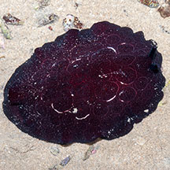
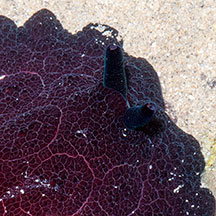
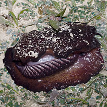
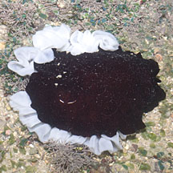
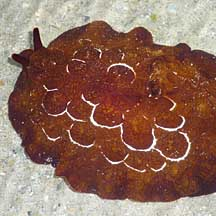

|
|
| sea slugs text index | photo index |
| Phylum Mollusca > Class Gastropoda > sea slugs > Order Notaspidea |
| Forskal's
sidegill slug Pleurobranchus forskalii Family Pleurobranchidae updated May 2020 Where seen? This humungous slug is sometimes seen, near reefs and seagrass areas. Sometimes seen buried just beneath the sand. On Cyrene, large numbers have been seen at some times of the year. According to Dr Bill Rudman, it is often found in quite large populations in shallow lagoons, reef crests and pools and sea grass beds. Features: 20-30cm. The large slug has a body texture of flat polygonal bumps with faint white lines forming circles. Colour variable from black, dark maroon to lighter shades of brown and orange. It has a pair of tubular rhinophores on its head. The large single gill is found on the right side between the mantle and the foot. The underside is smooth and unmarked. The slug appears to secrete a slime that feels acidic and is hard to rub off your hand. |
 Tanah Merah, Jun 09 |
 Pair of tubular rhinophores. |
 GIlls on the side. Cyrene Reef, Jul 11 |
| What does it eat? Although it
is not known what this species eats, other species of Pleurobranchus are reported to feed on ascidians. Indeed, on our shores large numbers are sometimes seen among dense beds of Green
gum drop ascidians. What eats it? According to Dr Rudman, chitinous plates identified as the jaw plates of this sea slug had been found in the stomach of a turtle. Baby slugs: They have been seen laying egg masses in white or pink frilly ribbons. |
|
 Laying egg ribbons. Cyrene Reef, Jul 11 |
||
 |
 |
| Forskal's sidegill slugs on Singapore shores |
On wildsingapore
flickr
|
| Other sightings on Singapore shores |
 Terumbu Berkas Besar, Jan 10 Photo shared by Loh Kok Sheng on his flickr. |
Links
|